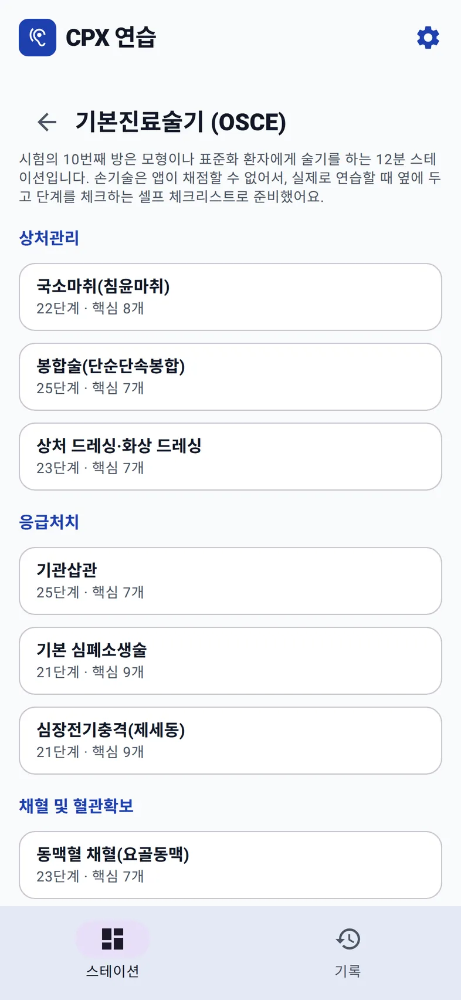
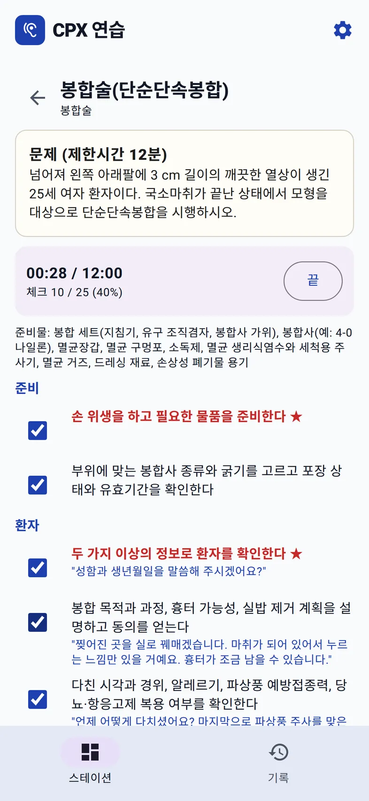
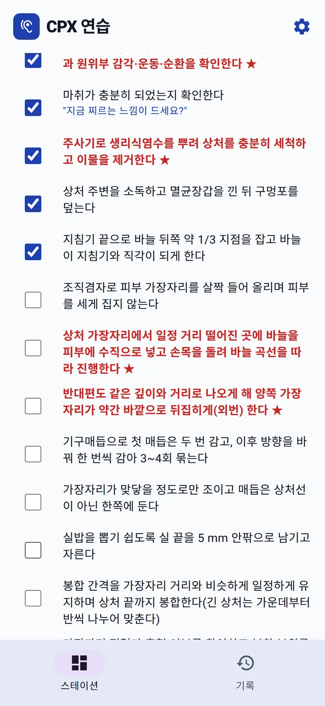
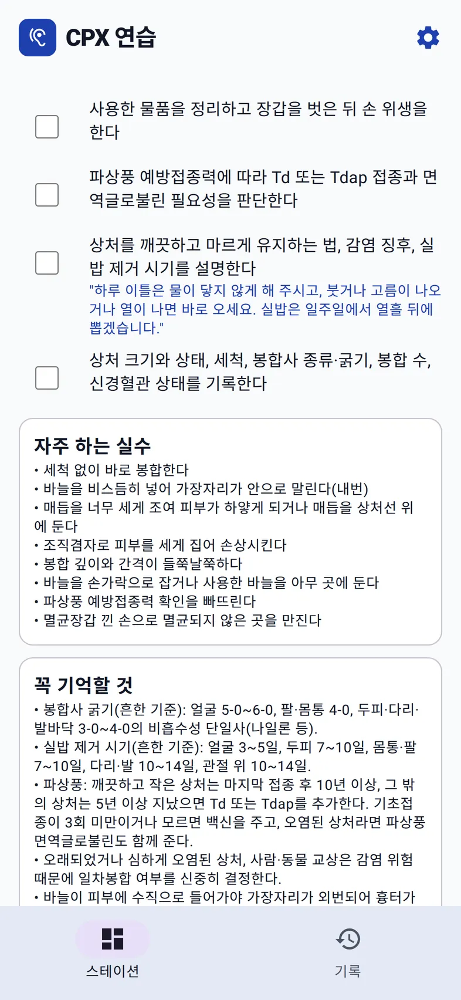

홈 › KMLE CPX 연습 › 기본진료술기 셀프 체크
기본진료술기 · OSCE
기본진료술기 9개, 12분 셀프 체크
실기시험의 10번째 방은 모형이나 표준화 환자에게 술기를 하는 12분 스테이션이다. 손기술은 AI가 채점할 수 없다. 그래서 웹 앱은 술기마다 단계별 체크리스트와 12분 타이머를 준다. 모형 옆에 휴대폰을 세워 두고, 한 단계 할 때마다 체크한다.
들어 있는 술기 9개
공부하기 › 기본진료술기 (OSCE) 체크리스트에 세 묶음으로 나뉘어 있다. 술기마다 전체 단계 수와 그중 핵심(★) 단계 수가 보인다.
| 묶음 | 술기 | 단계 · 핵심 |
|---|---|---|
| 상처관리 | 국소마취(침윤마취) | 22 · 8 |
| 봉합술(단순단속봉합) | 25 · 7 | |
| 상처 드레싱·화상 드레싱 | 23 · 7 | |
| 응급처치 | 기관삽관 | 25 · 7 |
| 기본 심폐소생술 | 21 · 9 | |
| 심장전기충격(제세동) | 21 · 9 | |
| 채혈 및 혈관확보 | 동맥혈 채혈(요골동맥) | 23 · 7 |
| 말초정맥로 확보와 안전수혈 | 22 · 8 | |
| 정맥혈 채혈·혈액배양 채혈 | 24 · 8 |

한 술기의 구성: 봉합술을 예로
술기를 열면 맨 위에 시험처럼 문제(제한시간 12분)가 있다. 봉합술이라면 "넘어져 왼쪽 아래팔에 3 cm 길이의 깨끗한 열상이 생긴 25세 여자 환자이다. 국소마취가 끝난 상태에서 모형을 대상으로 단순단속봉합을 시행하시오."
그 아래가 셀프 체크다. 시작을 누르면 12분 타이머가 돌고, 단계를 체크할 때마다 "체크 10 / 25 (40%)"처럼 진행률이 올라간다. 준비물 목록이 그다음에 있다.


단계는 준비 → 환자 → 술기 → 마무리 순서다. 손기술만 있는 게 아니다. 환자 확인, 설명과 동의, 파상풍 예방접종력 확인, 상처 관리 교육, 기록까지 단계로 들어가 있고, 말이 필요한 단계에는 할 말이 붙어 있다.
봉합 목적과 과정, 흉터 가능성, 실밥 제거 계획을 설명하고 동의를 얻는다
"찢어진 곳을 실로 꿰매겠습니다. 마취가 되어 있어서 누르는 느낌만 있을 거예요. 흉터가 조금 남을 수 있습니다."
핵심(★) 단계는 봉합술에서 7개다. 손 위생과 물품 준비, 두 가지 이상의 정보로 환자 확인, 상처와 원위부 신경혈관 상태 확인, 생리식염수 세척과 이물 제거, 바늘을 피부에 수직으로 넣기, 양쪽 가장자리를 같은 깊이로 외번, 바늘을 지침기로 잡은 채 손상성 폐기물 용기에 버리기.
자주 하는 실수와 꼭 기억할 것
체크리스트 끝에는 자주 하는 실수와 꼭 기억할 것이 있다. 봉합술의 자주 하는 실수는 이런 것들이다.
- 세척 없이 바로 봉합한다
- 바늘을 비스듬히 넣어 가장자리가 안으로 말린다(내번)
- 매듭을 너무 세게 조여 피부가 하얗게 되거나 매듭을 상처선 위에 둔다
- 파상풍 예방접종력 확인을 빠뜨린다
꼭 기억할 것에는 부위별 봉합사 굵기(얼굴 5-0~6-0, 팔·몸통 4-0, 두피·다리·발바닥 3-0~4-0), 부위별 실밥 제거 시기, 파상풍 추가 접종 기준처럼 설명 단계에서 물어볼 만한 숫자가 정리되어 있다.

혼자, 또는 둘이 연습하기
- 혼자: 모형과 물품을 펴고, 휴대폰을 옆에 세운 뒤 시작. 한 단계를 끝낼 때마다 체크한다. 12분이 끝나면 체크하지 못한 ★ 단계부터 본다.
- 둘이: 한 명이 술기를 하고, 다른 한 명이 휴대폰을 들고 채점자처럼 체크한다. 술기를 하는 사람은 화면을 보지 않는다. 끝나면 역할을 바꾼다.
- 말로 하는 단계도 소리 내어: 환자 확인, 설명, 교육은 실제 시험에서도 말로 평가된다. 체크리스트의 예문을 그대로 말해 본다.
기본진료술기는 앱이 채점하지 않는다. 체크는 스스로 하는 것이고, 손의 위치나 기법이 맞는지는 실습 시간에 교수나 조교에게 확인받아야 한다.